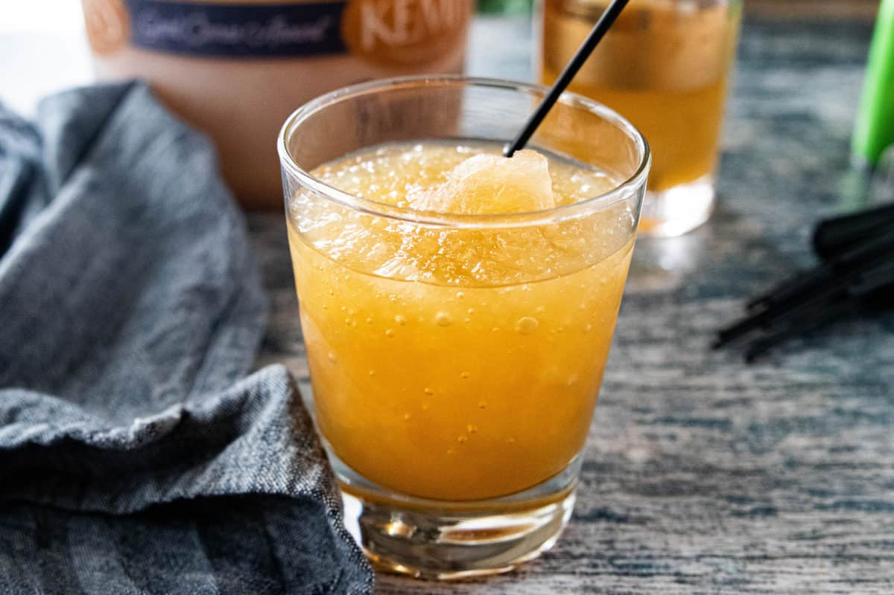

Holiday Brandy Slush

Description
Nothing pairs together with the holidays quite like alcohol! This refreshing cocktail pairs brandy with a mix of juices for a sweet, crisp taste.
Ingredients
- 9 Cups Water
- 2 Cups Wugar
- 2 Bags Green Tea
- 1 Can Frozen Orange Juice
- 1 Can Frozen Lemonade
- Ginger Ale or Lemon Lime Soda
Step By Step Instructions
- Bring seven cups water to a boil and mix in two cups sugar
- Let cool with two green tea bags steeping in the mixture
- After cooling, mix in two cups water
- Add in both the can of frozen lemonade and the can of frozen orange juice and mix well
- Mix in two cups of brandy (whiskey or bourbon works too
- Freeze overnight
- When frozen, scoop into a rocks glass and top with soda of choice. Enjoy!